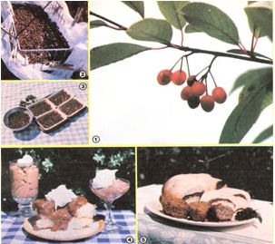

You can use everything but the breeze that filters through the foliage of . . .
The glistening red or black fruit of the wild chokecherry (Prunus virginiana) is a familiar sight-during August and September-next to streams, along roads, and in wooded areas all across the United States and Canada. The usually freefor-the-gathering edible, which can be found as far north as Alaska and as far south as the Mexican border, is commonly harvested to make jam or jelly . . . but there are many exciting ways to utilize the products of this versatile wildling.
NATIVE KNOWLEDGE
When I was a child, a great number of shrublike chokecherry trees grew along the creeks not far from my parents' Dakota homestead. We shared the crop with our native American friends, and it was one of those folks, named Mrs. Jondas, who suggested that we dry part of our bountiful harvest for wintertime fixings.
Her dehydration method consisted of placing the fruit, in full sun, on cloth-covered trays . . . then storing the preserved cherries in paper bags hung from the kitchen rafters. When winter appetites needed a lift, she'd pound a handful of the hard, dry fruits into flour, which she then used to season puddings and meat dishes. (Chokecherry flour was often an ingredient in pemmican, the Indian staple food.)
After trying out Mrs. Jondas's ideas, we soon developed some appealing recipes of our own. In fact, the chokecherry became so important a part of our food, beverage, and medical provisions that when we moved to the Mohave desertwhere the tree doesn't grow wild-it was imperative that we try cultivating some of our own.
We were able to order seedlings from Gurney Seed & Nursery (Dept. TMEN,
Yankton, South Dakota 57059 . . . four 6to 12inch transplants sold for $4.89, total . . . 2- to 3-foot saplings were $4.79 each), andsomewhat to our surprise-the experiment was a success! Planted where they received the protection of a windbreak and filtered shade in the afternoon, our three small trees not only survived in the unfriendly desert atmosphere, but actually grew into a thicket, just as they would have done in their natural habitat.
A PRETTY ADDITION
Besides providing luscious fruit, the chokecherry has beautiful dark green, glossy foliage that would enhance any garden corner or city patio. (Although they're most often low and bushlike, the trees can grow to be over 20 feet tall, and can develop trunks 8 inches in diameter.) In May, the limbs become covered with long racemes of white blossoms whose light, unique aroma fills the air. Round green cherries eventually replace the flowers, and-when they reach pe size-the fruits turn a deep purplish red or black . . . a signal for every bird in the country to come have a feast. At tha point, we simply slide a bag made of old sheer curtains over some of the limbs to protect our share of fruit.
We sometimes just clip off the entire heavily laden limbs, and then harvest the fruit at our leisure . . . since stripping it right off the tree can be a very "juicy" project. The pretty little cherries tempt one to taste, but-although the tartness varies from tree to tree-their usually sharp and astringent flavor discourages most folks from eating the fruit fresh.
/EDITOR'S NOTE: Don't allow children or livestock to consume the raw fruit or leaves, as the cherry pits and-to a lesser extent-the leaves and bark contain a cyanogenetic glycoside, a toxic substance that can produce hydrocyanic acid in the body. This poison, however, is rendered harmless by heat, including that encountered during sun-drying. /
Once you've harvested the cherries, you'll have to decide just how to use them. Your crop's juice can be turned into delicious jelly and syrup . . . the whole fresh fruit produces fine jam, wine, and vinegar . . . flour-made from the dried cherries-can change everyday baked goods and desserts into gourmet treats . . . and the leaves, bark, and roots can be transformed into tea, cough syrup, and dye!
JAM, JELLY, AND SYRUP
To extract chokecherry juice, crush the fresh fruit (or add enough water to nearly cover the harvest) and bring it to a boil. The heated cherries can then be mashed or put through a food mill that breaks the pulp loose but doesn't crush the pits. In order to prepare jelly, you'll have to remove the pulp by straining the juice through a porous cloth . . . but such filtering won't be necessary if jam or "butter" is desired.
Then, for each cup of juice, add 1/3 package of pectin and 2/3 cup of honey. (Some folks also stir in apple juice to increase the mixture's pectin content.) Boil the liquid, stirring all the while, and when heavy drops slowly slide down a spoon held above the pot, allow the sauce to drip onto a plate . . . let it cool a few minutes . . . then move the droplets with a finger or a silver knife. (Remember that when you use honey instead of sugar, the cooking time for any jelled substance will be longer.) If the jelly/jam is still too thin, it will wipe clear of the dish . . . but if it leaves a thin coating and the excess humps up in a "jellylike" way, it's ready to be put into sterilized glasses orjars.
(If the batch doesn't set after it has cooled for a day, you can either cook the sauce more or just use it as a syrup. In fact, I make chokecherry syrup from the same recipe, by simply eliminating the pectin.)
A WARMING WINE
To brew up some chokecherry wine for the winter holidays, fill a crock with fresh fruit and crush the cherries with a wooden potato masher or the end of a clean board. Cover the pulp with boiling water, and lay a clean, porous cloth over the container's top.
Let the fruit and juice ferment. When it stops "working", skim any foam off the top . . . wash the cloth that covered the crock . . . then use the cleaned material to strain the juice. (You can dump the remains into your hog trough if you have one . . . pigs love 'em!) Next, wash the crock . . . add 3 cups of sugar for each gallon of juice (honey can be used, but -if too strongly flavored-it will tend to overpower the cherry taste) . . . cover the crock with a clean cloth . . . and let it stand in a warm pantry, cellar, or closet. When the liquid once again stops bubbling (usually after about ten days, depending on the temperature), bottle the brew . . . but don't seal the containers too tightly yet, or they may blow up, sincethough it may not be obvious to the eyethe wine is still working. After a couple of weeks, you can tighten up the lids or corks.
This wine may not be as smooth as many commercial beverages, but it's guaranteed to have a quick warming effect when you come in out of next winter's blizzards!
AN EASIER VERSION
For an easier-to-make wine (this recipe can be particularly handy when your chokecherry supply is lean), half fill a quart jar with the fresh fruit . . . spoon on 1/4 cup of warm honey . . . add more cherries to within an inch of the top of the jar . . . pour in just enough inexpensive red wine to cover the fruit (approximately 1 cup) . . . top the whole thing off with another 1/4 cup of honey (which should fill the container to within a half-inch of the top) . . . and seal the jar tightly. ( I use white enameled lids and regular screw rings for this purpose.)
Let the brew "rest" until the holiday season, then carefully strain off the wine and chill it for a tasty, sparkling drink.
A WILD-CHERRY CORDIAL
Although following the foregoing recipes might well exhaust your personal supply of chokecherries, we've far from run out of uses for the versatile fruit. To prepare a "livelier" beverage, for example, cook 5 cups of chokecherries and 2 cups of water, over medium heat, in an enamel or stainless steel pan for 30 minutes. Strain the juice through a porous cloth . . . measure it . . . and add twice that amount of sugar. Cook the mix for 5 minutes more, then add 1 cup of brandy for every 2 cups of syrup. Pour the liqueur into a sterilized bottle and cap it. The resulting spicy, tasty cordial is excellent served over ice as an aperitif or, with soda water, as a cooling highball.
CHOKECHERRY VINEGAR
You can also concoct a potent chokecherry vinegar. Add one cup of honey to every two gallons of mashed fruit and cover the mixture with cold water. Then top the container with a clean cloth . . . store it in a warm place . . . and-after about four weeks-skim off the top layer and add 1 cup of good cider vinegar (or one of the slippery blobs of "mother" that form when cider vinegar is made).
The ingredients should work for six months or more before you drain off the liquid. Just keep in mind that homemade vinegar can become much stronger than the commercial product, so it should be bottled when the flavor suits your taste.
DRYING THE FRUIT
Chokecherry trees can be so prolific that the branches actually snap from the fruit's weight, so an avid Prunus hunter will occasionally end up with some excess to dehydrate for future use.
All any cherry drying is done in old freezer baskets fitted out with wire loops to allow them to hang on the clothesline. A heavy layer of cloth goes under the fruit, and the entire basket is wrapped in a thin curtain-held shut by clothespins -to keep the birds away. When the cherries become hard, the fruit is ready to be stored in a dry place.
Then, anytime you think an "almondlike" flavor will enhance a dish, put a cup of the dried fruit through a metalplate flour mill. (I don't know what these hard cherries would do to stone plates.) You can figure that 1 cup of fruit will produce approximately 1/2 cup of flour, which can vary in consistency from powder to a coarse meal. (If too much flour is ground up at one time, it will soon lose much of its original flavor, leaving only a mild chocolate taste. But even this "old" grind can be used to make a "hot chocolate" drink, which is quite delicious with a couple of drops of vanilla added.)
BREADS AND DESSERTS
No doubt you'll soon develop your own chokecherry flour recipes, but here are some of my family's favorites . . . just to get you headed in the right direction.
If you'd like to whip up a batch of chokecherry muffins, combine 1-1/2 cups of unbleached flour with 1/2 cup of chokecherry flour, 3 teaspoons of baking powder, and 1/2 teaspoon of salt. Make a "well" in the center of the dry ingredients and pour in 1 beaten egg, 2 tablespoons of warm honey, 1 cup of milk, and 1/4 cup of melted shortening. Mix the batter well, and spoon it into 12 greased muffin cups, then bake the breakfast treats 20 to 25 minutes in a 400°F oven.
To make a chokecherry paste to use when filling bread rolls, mix together 1/2 cup of chokecherry flour, 2 tablespoons of water, and 3 tablespoons of honey. Stir the mixture occasionally while your favorite bread recipe is rising. Then, when the dough is ready to be shaped, pinch off a chunk that would make a small loaf and roll it out into a half-inch-thick rectangle. Spread the bread-to-be with the chokecherry mixture . . . roll it up . . . curve it inside a round cakepan . . . let it rise once more . . . and bake it for 30 to 40 minutes at 400°F. (Cover the top with foil during the last half of the baking period if the crust becomes too brown.) The chokecherry paste will look like a chocolate filling, and its mild almond flavor will spread throughout the bread.
A delicious chokecherry pudding can be made by grinding 1/2 cup of dried cherries, and combining the resulting flour with 2/3 cup of water. Let the paste stand while mixing together 1 cup of water, 1/2 to 3/4 cup of honey (depending on the sweetness you desire), 1/4 teaspoon of salt, 1 egg, 2 tablespoons of butter, and 2 tablespoons of cornstarch. Add the cherry flour mixture, and cook the pudding, over low heat or in a double boiler, until it thickens. For a final touch, stir in 1 teaspoon of vanilla . . . spoon the dessert into individual dishes . . . chill . . . and serve. The result will look like cocoa pudding with small bits of dark chocolate in it, and will have a crunchy texture and a mild almond flavor.
Prunus flour can also be used to produce a flavorful mock-almond filling to swirl through cream or vanilla pudding . . . layer a parfait . . . or spread between the cooled layers of a cake. Just grind up 1/2 cup of dried chokecherries, and combine the flour with 1 cup of water, 3 tablespoons of honey, and 3 tablespoons of unbleached flour. Then cook the mixture until a paste is formed.
OTHER CHOKECHERRY USES
When the old-timey medicine shows used to sell Wild Cherry Cough Syrup, the "secret ingredient" was usually our friend, the chokecherry, dressed up in a bottle with a fancy label. The mix was easy to make, it did the job it was supposed to do, and it sold fast ... even though most folks who purchased such remedies probably had chokecherries growing right on their own land!
To produce your own version of the potion, use 1 cup of chopped chokecherry twigs, leaves, or bark and 1 pint of water. Simmer the liquid for an hour, strain it, and add 1 cup of honey to each 1-1/2 cups of juice. Cook the mixture down until it has a syrupy texture, bottle it, and sample it-when necessary-to soothe a cough.
(If you use bark when making the syrup, gather it in the autumn, removing the outer layer and carefully drying the inner one. Avoid bark from very old or very young limbs, and don't plan to keep the material very long, as it deteriorates with age. Also, bark should always be taken from trimmed-off limbs or from strips made up and down the trunk . . . since removing a band around the tree"girdling"-will kill the chokecherry.)
Finally, believe it or not, there're a number of ways to prepare chokecherries that I haven't yet described. Our family enjoys the wild treat served in a hot or cold fruit soup (dilute some juice with water, add cornstarch to thicken it, and flavor the "broth" with cinnamon or citrus peels) . . . as an almond/ chocolate flavored tea (steep 1/4 teaspoon of cherry flour in a cup of water) . . . and evenwhen dried and powdered-added to pancake dough, sprinkled over pot roasts, and mixed into stews!
Of course, you may not have a chance to try every chokecherry recipe that I've mentioned here, but I'm confident that your family will find many ways to enjoy the prolific wild fruit. After all, when nature makes such a generous offer, it'd be just plain impolite to refuse her gift!
EDITOR'S NOTE: For more wild-berry lore, turn to the article on page 8.
|
 Photos By Patricia Cravener And The Author [1] Wild chokecherry fruit (this species is also called the ""pin cherry""). [2] l'lit, berries can be sun-dried in cloth-covered baskets or . . . [3] in recycled plastic food trays. [4] Use Prunus flour to make pudding and cake filling or . . . [5] bread rolls and muffin |
|
|